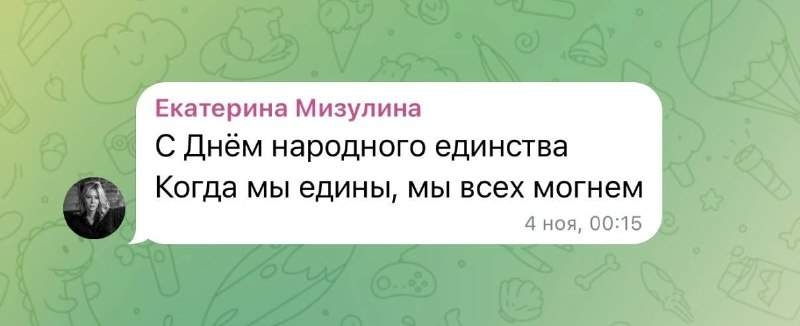
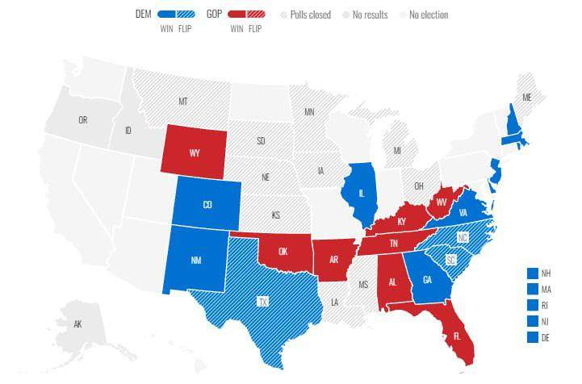
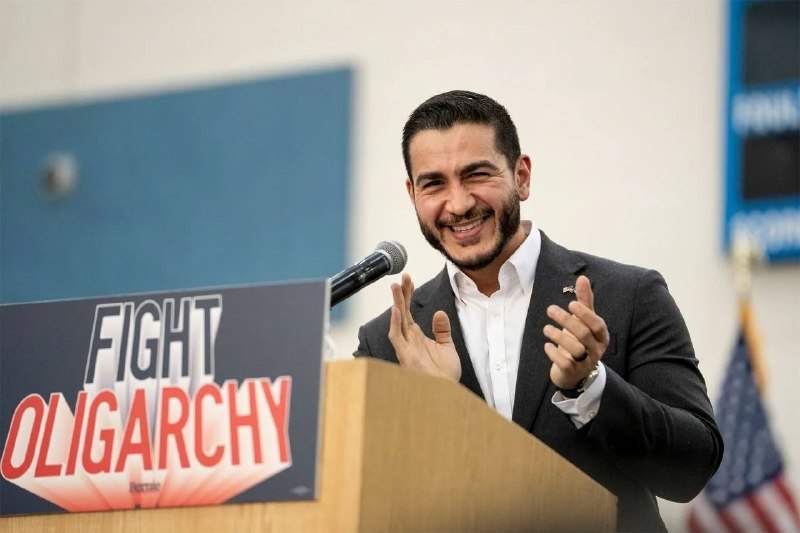
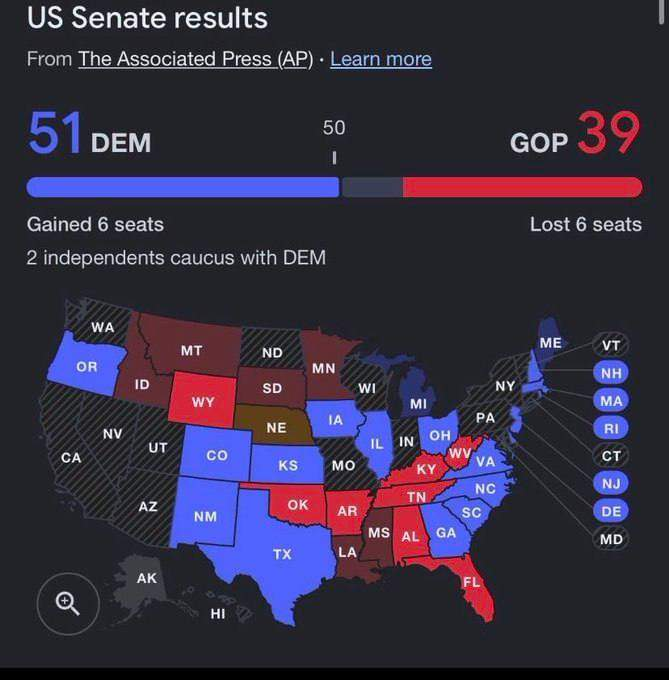
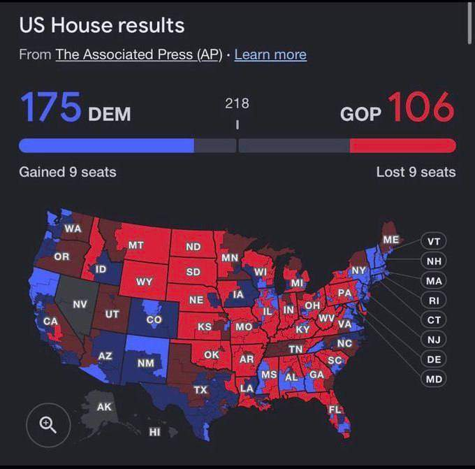
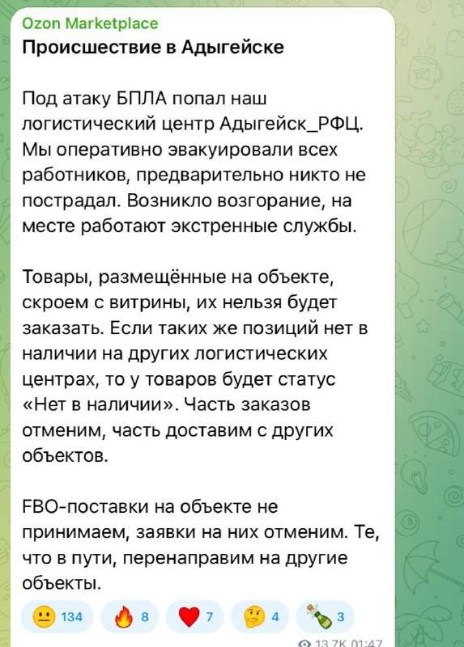
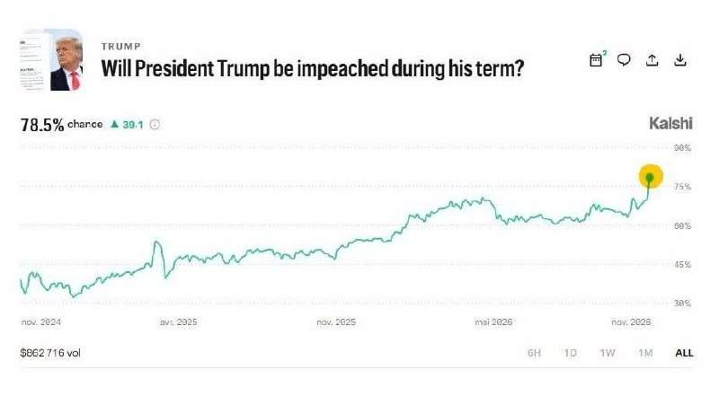
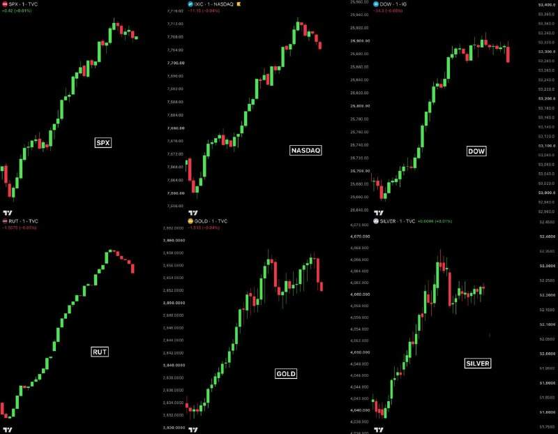

«Когда мы едины, мы всех могнем», — Мизулина поздравила россиян с Днём народного единства. @bankrollo

«Когда мы едины, мы всех могнем», — Мизулина поздравила россиян с Днём народного единства. @bankrollo
Демократы получили контроль над Сенатом и лидируют в голосовании в Палату представителей. Трамп, в свою очередь, уже заявил о готовности работать с Демократической партией, приняв результаты промежуточных выборов. Он объяснил «потери» республиканцев тем, что его самого не было в избирательных бюллетенях. По данным аналитического портала Decision Desk HQ, демократы получают 205 мест в палате представителей и 51 место в сенате. Республиканцы — 110 мест в палате представителей и 40 мест в сенате. @bankrollo

Трамп и Маск потеряли Техас, который называют «оплотом республиканцев». Там демократ впервые за 30 лет станет губернатором: Джина Инохоса одержала победу над действующим губернатором Техаса, республиканцем Грегом Эбботтом. Он занимал этот пост три срока. Кроме того, демократ также станет новым членом сената конгресса США от Техаса. Они не могли избраться в сенат от этого штата с 1988 года. Теперь здесь демократ Джеймс Таларико побеждает республиканца Кена Пакстона. Илон Маск потратил более $200 млн на поддержку республиканца, писали СМИ. @bankrollo

Демократ Абдул Эль-Сайед победил на выборах в Сенат США от штата Мичиган. Он стал первым мусульманином на этом посту. @bankrollo


«Я немного удивлен» — Трамп о предварительных результатах выборов в США. @bankrollo

Дроны атаковали склад Ozon в Адыгее, он загорелся, сообщили в компании. @bankrollo
Россиянам хотят начать отказывать в детских пособиях из-за слишком больших переводов на банковские карты. С 1 апреля 2027 года Минтруд будет проверять не только официальные доходы семьи, но и обороты по счетам. Если поступления превысят двойной годовой доход семьи, в пособии откажут, пишет Коммерсантъ. @bankrollo
Деньги умерших россиян будут быстрее передавать государству, если у них не осталось наследников. Такой указ подписал Путин. Речь идёт о рублёвых и валютных вкладах, а также счетах с драгоценными металлами. Новые правила коснутся счетов, владельцы которых умерли больше пяти лет назад, были сняты с налогового учёта, а наследственное дело так и не открыли. Теперь государству не понадобится свидетельство о праве на наследство. Вместо него ФНС будет ежегодно составлять список умерших граждан и их счетов. Первый такой перечень подготовят до 1 декабря. После получения требования от Росимущества у банков будет 15 рабочих дней, чтобы перевести деньги на единый казначейский счёт. Валюту перед этим обменяют на рубли по курсу банка, а вместо драгоценных металлов перечислят их стоимость, рассчитанную по условиям договора. Если наследник объявится позже и через суд восстановит срок принятия наследства, он сможет получить из бюджета сумму, которую банк перечислил государству. При этом обычные правила Гражданского кодекса о возврате наследства в таком случае действовать не будут. @bankrollo
Россия повысила пошлины на крепкий алкоголь из недружественных стран с 20% до 35%, а минимальную ставку — с 3 до 5 евро за литр. @bankrollo
Нейрослоп про Романовых сняли в России. @bankrollo UPD: Продюсер фильма Урушев назвал афишу реальной съёмкой. По его словам, в фильме вообще не используется ИИ.
В Турции арестовали 34 россиянок по обвинению в нарушении морали, они находятся в миграционной тюрьме. По данным Baza, их заманивали на работу артистками, но вынуждали становиться проститутками. Всего во время рейдов по турецким ночным клубам были задержаны более 100 девушек, большинство из них приехали из стран СНГ. @bankrollo

У букмекеров начали расти ставки на импичмент Трампа. @bankrollo
Китай подтвердил контакты с Россией и США по поводу первой трёхсторонней встречи Путина, Трампа и Си Цзиньпина, пишет Bloomberg. Встреча может состояться на саммите АТЭС в китайском Шэньчжэне 18–19 ноября. @bankrollo
Пояса из собачьей и верблюжей шерсти резко подорожали в России почти на 30% — аналитики Атол. @bankrollo
Жители США не получат по $5000 (около 400 тысяч рублей) из-за провала республиканцев на выборах. В сентябре Трамп пообещал каждому взрослому американцу по $5000, если в результате промежуточных выборов Республиканская партия получит контроль над обеими палатами конгресса. Позднее он заявил, что американцам не хватит этих денег даже на скромный перекус в его клубе Мар-а-Лаго: «На эти $5000 вы максимум купите гамбургер и, может быть, маленький десерт. Не уверен, что хватит даже на это». В США около 270 млн совершеннолетних граждан. То есть обещание Трампа обошлось бы казне в более чем $1,3 трлн. @bankrollo
В Армении после обысков задержали миллиардера и лидера оппозиционной «Сильной Армении» Самвела Карапетяна. По данным Forbes, его состояние составляет около $3,2 млрд. Среди активов Карапетяна: девелопер Ташир, сеть ТРЦ РИО, «Фора-Банк» и более 140 ресторанов в России и Армении. @bankrollo
Россия искренне рассчитывает, что Трамп продолжит свои миротворческие усилия и после выборов в США — Песков. @bankrollo
В России начали отменять или сокращать выплаты родственникам по гибели военных на СВО, сообщила военкор Кашеварова. Такое решение чиновники объясняют нехваткой денег. Так, в Оренбургской области и Хакасии выплаты полностью отменили. В Ульяновской области снизили с 1 млн рублей до 50 тысяч рублей, в Саратовской до 100 тысяч рублей, в Кемеровской с 3 млн до 1 млн рублей, в Белгородской области также до 1 млн рублей. Власти Башкортостана снизили размер выплат с 2 млн до 100 тысяч рублей, Омской, Иркутской и Кировской областях — с 1 млн до 500 тысяч рублей, Смоленской области с 1 млн до 700 тысяч рублей. @bankrollo
В Москве начался зимний снегопад. @bankrollo

Американский рынок взлетел на $800 млрд за 30 минут. После разгромной победы на выборах лидер демократов в Сенате пообещал закончить войну с Ираном и законодательно запретить Трампу воевать. @bankrollo
Война с Ираном закончится тогда, когда я этого захочу — Трамп. @bankrollo
Я разрушу Демпартию, если они попытаются меня остановить — Трамп. @bankrollo
Трамп провёл экстренное совещание с Маском после поражения на выборах. @bankrollo